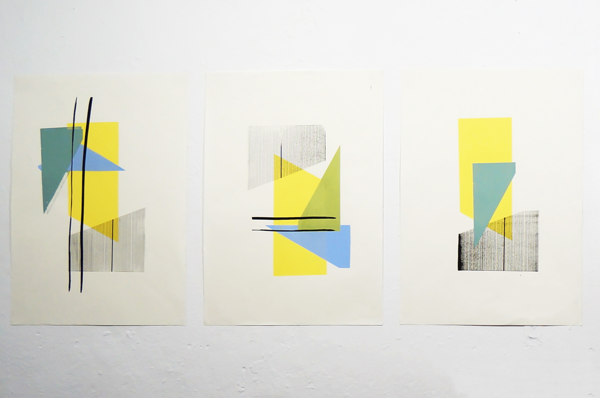

(Prelúdio = Prelude)
“1. a preliminary to an action, event, condition, or work of broader scope and higher importance.
2. any action, event, comment, etc. that precedes something else.
3. Music. a) a relatively short, independent insttrumental composition, free in form and resembling an improvisation. b) a piece that precedes a more important movement. c) the overture to an opera. d) an independent piece, of moderate lenght, sometimes used as an introduction to a fugue.”
in V/A. Webster’s Encyclopedic Unabridged Dictionary, 1996 [1987].

Filipe Feijão, Untitled, 2011-2016. Olive-tree log, 43 x 195 x 38 cm; and, Untitled, 2010-2016. Glazed pottery bowl with water and mineral charcoal with pyrite, 61 x 25 cm. Catarina Domingues, Serie “Qualia,” 2017. Silkscreen on paper, 73.6 x 56 cm; and, “íntima,” 2017. Silkscreen on paper, 73.6 x 56 cm.

Antónia Labaredas, Untitled. Stoneware, dye and ceramic oxides, 46 x 50 x 42 cm.

João Margarido, Fragilidade da terra, 2015. Incubator and soil, 120 x 120 x 70 cm. Carlos Alexandre Rodrigues, Serie “Montes, montanhas e pedras,” 2017. Oil, charcoal and graphite on paper, Various dimensions; and, “Serie “Acção Central,” 2017. Oil, charcoal and graphite on paper. 52 x 42 cm. Diana Baptista, Nos teus olhos negros permaneço, 2017. Ground extracted on site from the old coal merchant’s, electric wire, lighting focus and plants, Various dimensions.

Diana Baptista, Nos teus olhos negros permaneço, 2017. Ground extracted on site from the old coal merchant’s, electric wire, lighting focus and plants, Various dimensions.

Ivo Andrade, Serie “Matérias Transitórias,” 2017.

Ivo Andrade, Serie “Matérias Transitórias,” 2017.

Luísa Passos, Solo Subsolo e Rocha matriz, 2017. Indian ink on paper, 50 x 250 cm; and, 7 palmos de terra, 2017. Pen on paper, 50 x 150 cm.

Luísa Passos, 7 palmos de terra, 2017. Pen on paper, 50 x 150 cm.

Laura Figueiras, Untitled, 2017. Silkscreen on paper. 42 x 29.7 cm.

Carlos Alexandre Rodrigues, Serie “Matérias Transitórias,” 2017, Diptych. Oil, charcoal and graphite on paper, 33 x 43 cm (each).

Joana Patrão, Navegação em profundidade (mapa de movimentos), 2017. Installation with 106 images and text inscription, laser print on paper, charcoal and graphite on wall, 230 x 130 cm.

Joana Patrão, 21 dias de ondulação, 2017. Ground collected on site, arabic gum, water and gravity action on paper, 90 x 70 cm (complete installation), 21 elements (8.2 x 29.6 each).

Orlando Francisco Vieira, Pórtico I, 2017. Installation, plastic canvas and stencil on wall, Various dimensions.

Orlando Francisco Vieira, Pórtico I, 2017. Installation, plastic canvas and stencil on wall, Various dimensions.

Orlando Francisco Vieira, Pórtico I, 2017. Installation, plastic canvas and stencil on wall, Various dimensions.

Orlando Francisco Vieira, Pórtico I, 2017. Installation, plastic canvas and stencil on wall, Various dimensions.

Filipe Feijão, Untitled, 2000-2012. Ground clod, wood strips and structure, stainless metre segment and brush, 57 x 73 x 92 cm.

Collective site-specific intervention, Catharsis, 2017. Installation, soil, charcoal, clay, stones, non identified objects and video projection, Various dimensions.

Collective site-specific intervention, Catharsis, 2017. Installation, soil, charcoal, clay, stones, non identified objects and video projection, Various dimensions.

Collective site-specific intervention, Catharsis, 2017. Installation, soil, charcoal, clay, stones, non identified objects and video projection, Various dimensions.
〈
〉
(Prelúdio = Prelude)
“1. a preliminary to an action, event, condition, or work of broader scope and higher importance.
2. any action, event, comment, etc. that precedes something else.
3. Music. a) a relatively short, independent insttrumental composition, free in form and resembling an improvisation. b) a piece that precedes a more important movement. c) the overture to an opera. d) an independent piece, of moderate lenght, sometimes used as an introduction to a fugue.”
in V/A. Webster’s Encyclopedic Unabridged Dictionary, 1996 [1987].